Next: A gallery of plotstyles
Up: plt Tutorial and Cookbook
Previous: ``Quickplot'' mode
Plotting Data
Most of the previous examples have illustrated how two columns of data can be
plotted as a connected set of line segments. This is plt's
default style for plotting data, but many other styles are supported
using the -p option to choose a plotstyle. For example, data can
be plotted using points, characters, strings, or symbols (scatter
plots); with error bars; or using lines of various widths, grey levels,
colors, or patterns (solid, dotted, etc.).
To specify a plotstyle, we can use the -p option, followed by
sub-options that control how the points are plotted. Each sub-option
can also have an optional argument following it. This argument can
change the font, point size, color, gray scale, line width, or line
style (solid, dotted, dashed, etc.) of the current plot. (If you want
to use those control options that enable you to make font changes, you
will need to read and understand chapter 11, Colors, Line Styles, and Fonts, beginning on
page ![[*]](crossref.png) .)
.)
Each plotstyle ``takes'' (consumes) one or more data columns. If you
use more than one plotstyle, you must include enough data column
numbers for all of the plotstyles in the plt command line. Note
that you may repeat data column numbers if necessary to satisfy the
requirements of the plotstyles you select; see the examples below to
see how this can be done.
If you have not used plt previously, it is probably a bad idea
to read through this chapter from beginning to end, because the usage
of the plotstyles (especially the first one listed below, c) is
mind-bogglingly convoluted. A better strategy is to begin by studying
the examples in this chapter; find one or more that illustrate
features you would like to use in your own plots, then see which
plotstyles were used to obtain these features.
The sub-options to -p are:
- c
- Takes three data columns (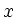,
 , and ).
Each value tells plt what to do with the corresponding
and values. The values for can be:
, and ).
Each value tells plt what to do with the corresponding
and values. The values for can be:
| 0 |
continue (draw) path to  |
|
1 |
move to without drawing (i.e., with the ``pen''
up), then put the pen down (begin a new path) |
|
2 |
put a dot at |
|
3 |
put a small box at |
|
9 |
paint the path (usually done as the default when a new path is begun
without specifying what to do with the old one) |
|
10 |
continue to , close path and fill the inside with grey level
specified by the argument to the c sub-option |
|
11 |
continue to , close path and fill the inside with grey level
specified by the argument to the c sub-option; then draw a black
border |
|
12 - 13 |
continue to , close path and
fill the inside with grey level specified by 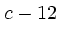 (12.0 = black,
13.0 = white) |
|
14 - 15 |
continue to , close path and fill the
inside with grey level specified by  (14.0 = black, 15.0 = white);
then draw a black border (14.0 = black, 15.0 = white);
then draw a black border |
|
20 |
(requires -fs option, see section 3.7,
String arrays, page ) change font to that
specified by string number from the -fs string array |
|
21 |
change point size to |
|
22 |
change line width to |
|
23 |
(requires -fs option, see section 3.7)
change line style to that specified by string number from the -fs
string array; legal line styles are ``solid'', ``dotted'',
``shortdashed'', ``dotdashed'', and ``longdashed''. Note
that is ignored (see figure 6.1). |
|
24 |
change grey level to (0 = black, 1 = white); is ignored. |
|
25 |
(requires -fs option, see section 3.7)
change color to that specified by string number from the fontgroup
string array (see appendix A for details on how to specify
colors by name; also, note that is ignored) |
|
30 - 39 |
put symbol number 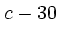 at (see
figure 6.2) |
|
100, 101, ... |
(requires -tf or -ts option, see
section 3.7) put string number control-100 from the
text string array at
|
Figure 6.1:
Produced using the command:
 |
Figure 6.2:
The ten symbolsthat
can be plotted using plotstyles c (suboptions 30 through 39), E,
and S. Numeric (0-9) and mnemonic (``circle'', ``square'', etc.) names
appear to the right of each symbol; either form may be used when specifying a
symbol to be used with plotstyles E or S. The open symbols (0
through 4) have opaque centers; these are particularly recommended for
relatively dense scatter plots because it is still possible to distinguish and
count individual data points even when the symbols partially overlap. The size
of the symbols is determined by the current font's point size (see the
description of the -sf option in chapter 11), Colors, Line Styles, and Fonts, beginning on page .
| 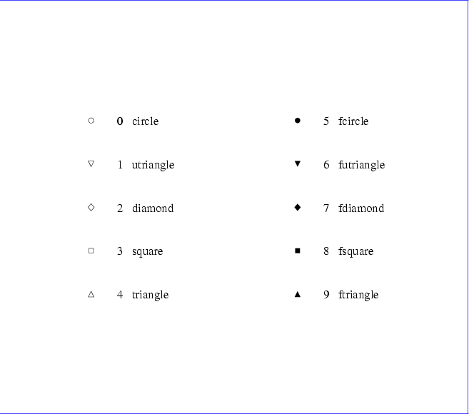 |
- C
- Takes two columns, and , assumed to be the vertices of a polygon.
The polygon is drawn by connecting consecutive vertices and by
connecting the last vertex to the first, and then it is filled in the
current color (default: black). Nonconvex and self-intersecting
polygons are filled properly.
See figure 6.3, page .
- e+
- Takes three columns (, , and
 ). This sub-option
makes a scatter plot, like s (see below), but including error bars. Each
value tells plt the size of the error associated with the
corresponding and . When using the e sub-option, you may specify
the character (default: ``*'') to use when plotting , and you must
indicate if you wish to plot the top, bottom, or both halves of the error bars,
as follows:
). This sub-option
makes a scatter plot, like s (see below), but including error bars. Each
value tells plt the size of the error associated with the
corresponding and . When using the e sub-option, you may specify
the character (default: ``*'') to use when plotting , and you must
indicate if you wish to plot the top, bottom, or both halves of the error bars,
as follows:
- e-
-
- e:
-
- e+
-
plot as ``'', with top half of error bars only
- e-
- plot as ``'', with bottom half of error bars only
- e:
- plot as ``'', with both top and bottom error bars;
the ``:'' may be omitted unless is either ``+'' or
``-''
- E+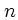
- Takes three columns (, , and ).
Exactly like its counterpart, e, except that this sub-option
allows you to plot a specified symbol (identified by a symbol number
between 0 and 9 inclusive) instead of a character.
- E-
-
- E:
-
- f
-
Takes three columns (, 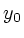, and 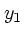) and fills the area defined
by the normal plots of 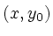 and 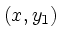 in the current color
(default: black).
See figure 6.10, page .
- i
- Takes two columns, and . The pairs are
plotted in impulse response form.
See figure 6.11, page .
- l
- Takes four columns, 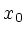, 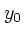, 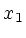, and
 . The line
segments with endpoints 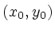 and 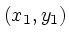 are plotted.
See figure 6.12, page .
. The line
segments with endpoints 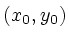 and 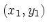 are plotted.
See figure 6.12, page .
- m
- Takes one column (). The values are always taken from column 0
of the input. The output is a normal plot of pairs. (If you supply
only one data column number to plt and do not specify a
plotstyle, this is the type of plot you will obtain by default.)
See figure 6.13, page .
- n
- Takes two columns, and . The output is a normal plot
of pairs. (If you supply two data column numbers to plt and do not specify a plotstyle, this is the type of plot you will
obtain by default.)
See figure 6.14, page .
- N
- Takes two columns, and . The area bounded by the normal plot of
the pairs and the x axis is filled with the current color (default:
black).
See figure 6.15, page .
- o
- Takes three columns (, , and ) and outlines the area defined
by the normal plots of and in the current color (default:
black).
See figure 6.16, page .
- O
- Takes three columns (, , and ), outlines the area defined
by the normal plots of and in black, and fills this
area in the current color (default: black).
See figure 6.17, page .
- s
- Takes two columns, and . The output is a scatter plot of
pairs, where each pair is plotted using the character specified by
(a character suffixed to the plotstyle name, s).
See figure 6.18, page .
- S
- Takes two columns, and . Exactly like its counterpart, s, except that this plotstyle allows you to plot a specified symbol
(identified by a symbol number between 0 and 9 inclusive), instead
of a character.
See figure 6.19, page .
- t
- Takes three columns, , , and .
This plotstyle must be used together with the -tf or -ts
option (see section 3.7). The values specify strings
from the -tf or -ts string array; plt prints these
at the locations given by the corresponding pairs (adjusting the
string positions according to the text box coordinates provided to the
-tf or -ts option). See figure 6.20,
page .
Subsections
Next: A gallery of plotstyles
Up: plt Tutorial and Cookbook
Previous: ``Quickplot'' mode
George B. Moody (george@mit.edu)
2005-04-26